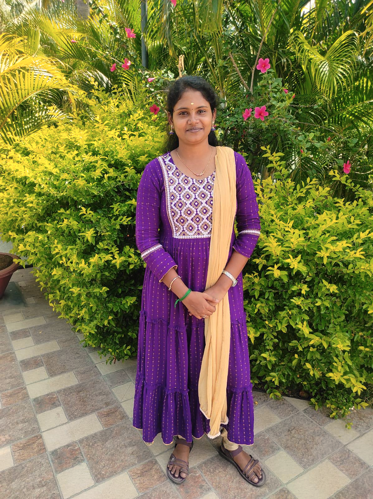

Machine Learning Engineer
Sudhanthirapriya Sundaram
I build production AI systems — RAG pipelines, OCR at scale, and recommendation engines — for platforms real people use, not just notebooks.
2 yrsexperience
5production systems shipped
~98%OCR extraction accuracy